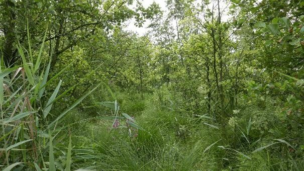

GRASLAND OP ZWARE KLEI
Inleiding
Het meeste grasland op klei ligt op zware klei. Zavel en lichte klei worden meestal voor bouwland gebruikt. Zware zeeklei en zware rivierklei zijn onder verschillende omstandigheden ontstaan en hebben verschillende eigenschappen. Zeeklei wordt vaak gevormd in rietmoerassen onder invloed van eb en vloed. Rivierklei door overstroming van lage delen in de winter. Ook in een vegetatie; vaak in een elzenbroekbos. Zware klei heeft vaak een vegetatie nodig om stilstaand water te krijgen waarin de zeer kleine kleideeltjes kunnen bezinken.
Ontstaan
Door stijgen van de zeespiegel en dalen van de landoppervlakte is er vooral tussen 250 en 600 na Chr. veel zware klei afgezet. Dat gebeurde in rietmoerassen en elzen- en wilgenbossen. Wanneer de klei afgezet werd in brak water met riet kreeg de klei ongunstige eigenschappen. Ze wordt knipklei genoemd.

Zware klei in Nederland

In een dergelijke vegetatie (riet en elzen, hier in de westelijke Betuwe) is de zware klei afgezet.
Zware klei kan alleen bezinken wanneer het water vrijwel stil staat en dat kan alleen bij een dichte vegetatie. Die dichte vegetatie geeft veel zure stoffen en die lossen de kalk op. Zware klei is daarom altijd zuur.
Zeeklei
Landschap
Het landschap in gebieden met zware klei is meestal open. De moeilijke bewerkbaarheid van de meestal kalkloze klei betekent dat er vrijwel alleen gras kan worden verbouwd.

Zware klei in Zeeland. De toren van Middelburg op de achtergrond.

Zware klei met greppels voor de ontwatering in Friesland
Zware kleigronden vergen veel aandacht. Gaat er iets mis dan is dat niet snel te herstellen. Een goede ontwatering is belangrijk (greppels, drains). Berijden onder natte omstandigheden moet zo veel mogelijk vermeden worden. Verzorg de regenwormen (Vlinderbloemigen in het grasmengsel, koeien in de wei, goede zuurgraad,) en de rest van het bodemleven. Beperk opnieuw inzaaien.
De bodem
-Dikte van de zode
Gras vormt na verloop van tijd een zode. Deze heeft een hoger organische stofgehalte en is beter doorworteld dan de laag eronder.
De dikte van de zode is een van de belangrijkste bepalende factoren voor de bodemkwaliteit van zware klei. In de volgende serie afbeeldingen een steeds dikkere zode. De verschillen in dikte van de zode hangen samen met frequentie van scheuren en andere factoren die de bodemkwaliteit bepalen zoals gebruik van vaste mest, frequentie van berijden, maaien of weiden enz.
-1920w.png)
Zode 3 cm dik
-1920w.png)
Zode 4 cm dik
-1920w.png)
Zode 5 cm dik
-1920w.png)
Zode 6 cm dik
-1920w.png)
Zode 8 cm dik
-1920w.png)
Zode 10 cm dik
-1920w.png)
Zode 12 cm dik
-1920w.png)
Zode 13 cm dik
De laag onder de zode
De laag onder de zode is meestal slecht doorwortelbaar. In droge periodes ontstaan er scheuren. Hier kunnen kluiten invallen. Onder natte omstandigheden gaan de scheuren weer dicht, maar door de ingevallen kluiten is er minder ruimte beschikbaar en verdicht de bodem zichzelf. verticale regenwormgangen zijn zeer belangrijk voor de doorwortelingsmogelijkheden.
-1920w.png)
Wormgangen en ruimtes tussen kluiten zijn de enige mogelijkheid voor wortels om in de laag onder de zode door te dringen.
-1920w.png)
Wormgangen worden soms opgevuld met vruchtbare grond.
-1920w.png)
Dichte kluit met wormgangen
-1920w.png)
Wormgangen zijn belangrijk voor lucht, ontwatering en beworteling.
-1920w.png)
Ook hier weer alleen beworteling dankzij wormgangen.Het bodemprofiel
De opbouw van de bodem bestaat meestal uit 3 lagen. Bovenin de zode. Daaronder een laag die een deel van jaar boven en een deel van het jaar onder de grondwaterspiegel ligt. Deze laag bevat roestvlekken en is daardoor enigszins bruin gekleurd. Onder deze laag komt de laag die altijd onder de grondwaterspiegel ligt. Deze is grauw van kleur. Wanneer er wat organische stof in deze laag aanwezig is, is de kleur blauw.
-1920w.png)
Van boven naar beneden: de zode, de laag met roestvlekken en tenslotte de laag waar nooit lucht in komt.

Bodemprofiel met blauwgekleurde klei onderin. Duidt op organische stofhoudende klei.
Rivierklei
Hoewel zware rivierklei in een bos is ontstaan is het landschap net als bij zeeklei zeer open. De open vlakte van het landbouwgebied wordt plaatselijk onderbroken door populieren- en wilgenteelt, oude eendenkooien en natuurgebieden.
Landschap
Hoewel zware rivierklei in een bos is ontstaan is het landschap net als bij zeeklei zeer open. De open vlakte van het landbouwgebied wordt plaatselijk onderbroken door populieren- en wilgenteelt, oude eendenkooien en natuurgebieden.
Zware rivierklei bij Benschop in West-Utrecht
De bodem

Zware komklei in de Betuwe. Bovenin een goede structuur, Daaronder grote prismatische structuren. De twee donkere lagen zijn gevormd in een periode met dichtere vegetatie en zijn humusrijker

Zware klei onder gras in de Betuwe met een goede bodemstructuur en een actief bodemleven.

Rode klaver (rechts) wortelt veel dieper en intensiever dan gras en is een ideale aanvulling van gras maar moeilijk langere tijd te handhaven.

Klaver in het gras lukt niet meer in deze oude zode. Scheuren en opnieuw inzaaien lijkt de enige oplossing.

Links oud blijvend gras zonder klaver en rechts na scheuren en opnieuw inzaaien met een klaverrijk mengsel. Het organische stofgehalte is lager geworden maar beworteling en bodemleven (regenwormen) zijn toegenomen.

Mais is vanwege de rijkdom aan vezels een goede aanvulling op gras bij de voeding van de koe. Op zware klei is mais heel moeilijk te verbouwen maar in sommige jaren lukt het wel. Hierboven de situatie in de herfst na ploegen, hieronder die in het volgende voorjaar.

In de winter heeft het flink gevroren en hebben ijsnaalden de dichte kluiten losser gemaakt. Na opdrogen is er een losse grond die goed te bewerken is.
Maatregelen op zware klei
Belangrijke aandachtspunten:
- Goede ontwatering.
- Zo min mogelijk herinzaai.
- pH voldoende hoog.
- Grasklaver en geen gras.
- Mest niet bovengronds uitrijden.
- Beweiden in plaats van maaien.
- Beperk werktuiggewicht, lage bandenspanning.
- Houd fosfaatbemestingstoestand voldoende.
- Bevorder regenwormen.
- Kies grassoorten en -rassen met een diepe en intensieve beworteling
- Gerst meezaaien bij herinzaai.
- Gebruik een snelgroeiend / diepwortelend gewas als dekvrucht bij herinzaai.
- Stikstofbemesting beperken.
- Uitstel van stikstofgift na maaien.
- Stikstofgift toediening onder het maaiveld, niet oppervlakkig.
- Maai minder frequent.
- Beregen minder frequent.
- Voorkom droogtestress.
Muizenplaag in Friesland
De muizenplaag in Friesland is niet het gevolg van slecht bodembeheer.Aanvankelijk werd gedacht dat de schade die het huidige bodembeheer bij grasland op zware klei aan de bodemstructuur toebrengt, samenhangt met de muizenplaag. Het intensieve berijden, ook onder natte omstandigheden, leidt tot een sterk verdichte bovengrond. Hierdoor is beworteling in de bovengrond maar beperkt mogelijk en de wortels vormen een dichte zode boven op de verdichte grond (zie afbeelding). Een paradijs voor muizen ontstaat zo. Dat werd wel gezegd, maar nader onderzoek geeft aan dat dat niet zo is.
Sterk verdichte grond op bedrijf bij Jellum als gevolg van het vele berijden onder natte omstandigheden. Dit vele berijden was nodig omdat de koeien altijd op stal staan en er veel meer over de grond moet worden gereden om voer te halen.Het blijkt dat de muizen juist de betere percelen opzoeken. De percelen waar de wortels wel voldoende diep de grond in kunnen. Goed ontwaterd oud grasland is het meest gevoelig. Deze mening wordt bevestigd door ervaringen op vele bedrijven. Voorlopig is de afwezigheid van strenge winters, de droge zomers en zoals nu de lange periode met wat beter weer laat in het jaar de oorzaak. Laat in het jaar is juist de periode dat de muizen gaan zwerven. Naast het klimaat spelen mogelijk andere factoren een rol, maar daar is nog geen duidelijkheid over.
De oppervlakte met grote schade is ondertussen aanzienlijk, meer dan 12.000 ha, en noodzaakt de boeren om na 1 februari, als dat weer mag, de grond te gaan scheuren. Dit heeft een sterke verlaging van het organische stofgehalte tot gevolg en betekent een grote achteruitgang van de bodemkwaliteit. De organische stof wordt over een grotere laag verdeeld en ook versneld afgebroken. Het zijn dus juist de beste percelen die dit treft.
Ravage door muizen
Uitbreiding van de schade bij Terzool in Friesland eind 2014 (Onderzoek WUR)
-1920w.jpg)
Het aardige beest dat dit allemaal veroorzaakt. Eigenlijk geen gewone muis, maar een woelmuis. Woelmuizen houden geen winterslaap, maar trekken in de winter juist rond en dat is een onderdeel van het probleem. Omdat ze de wortels van het gras eten sterft het gras af.
Literatuur
Nick van Eekeren, N. van, Iepema, G., Domhof, D. Goud van Oud Grasland; Bodemkwaliteit onder jong en oud grasland op klei 2016, Luis Bolk